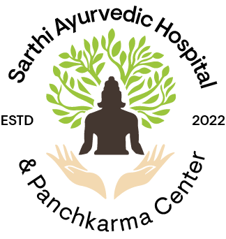
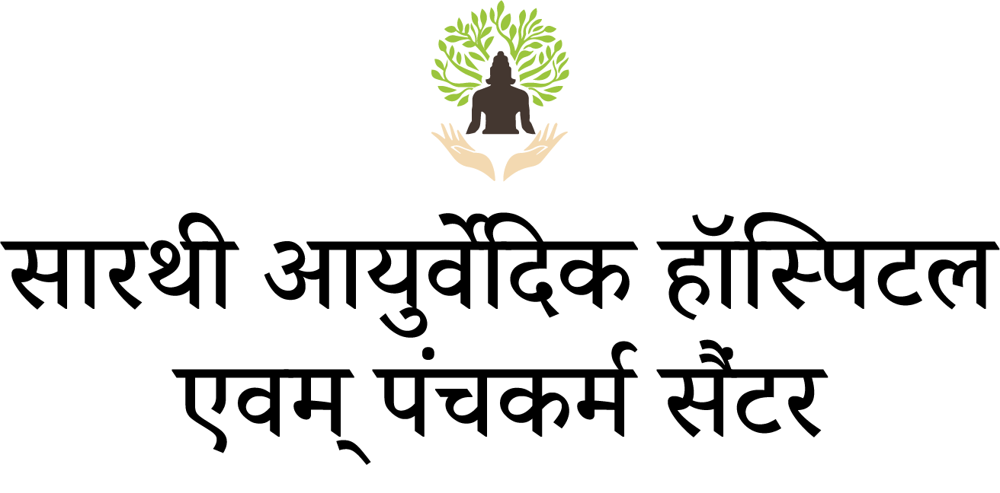
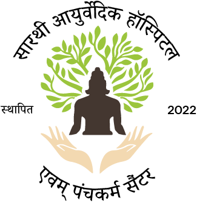
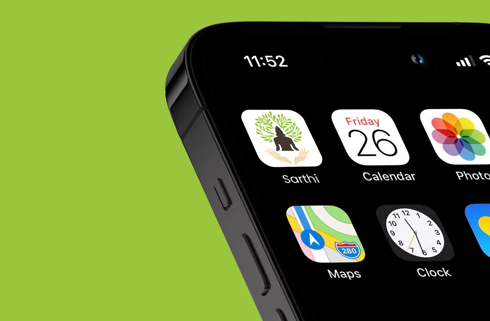
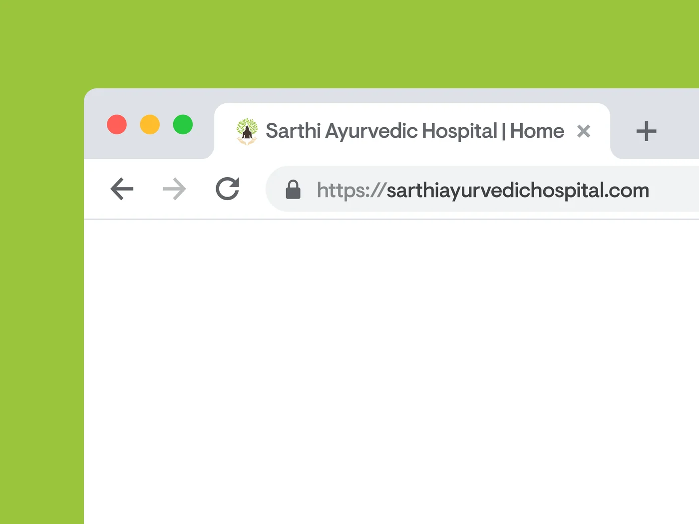
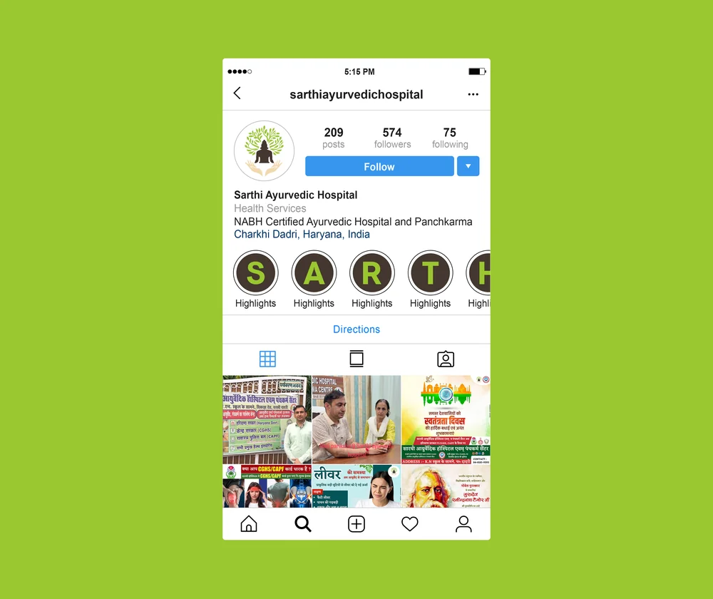
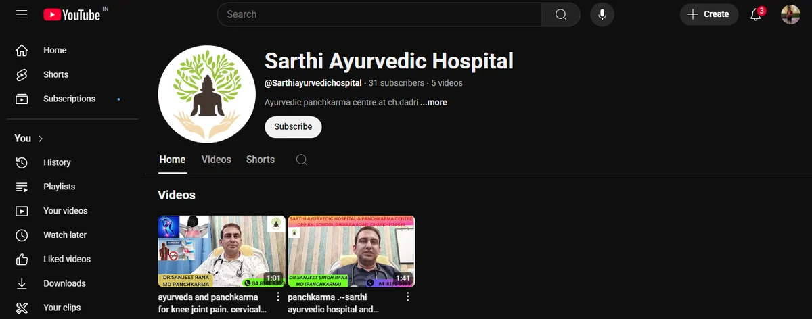
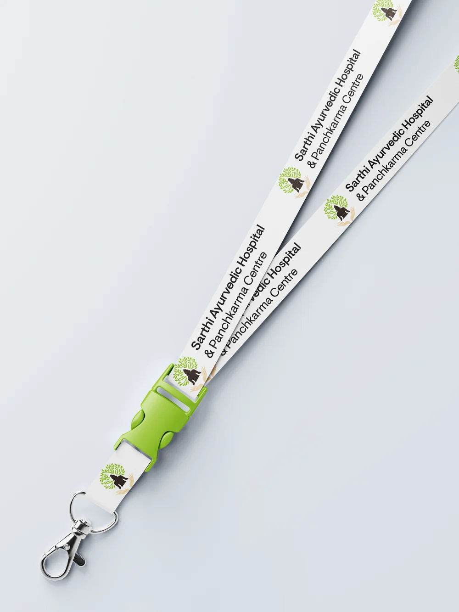
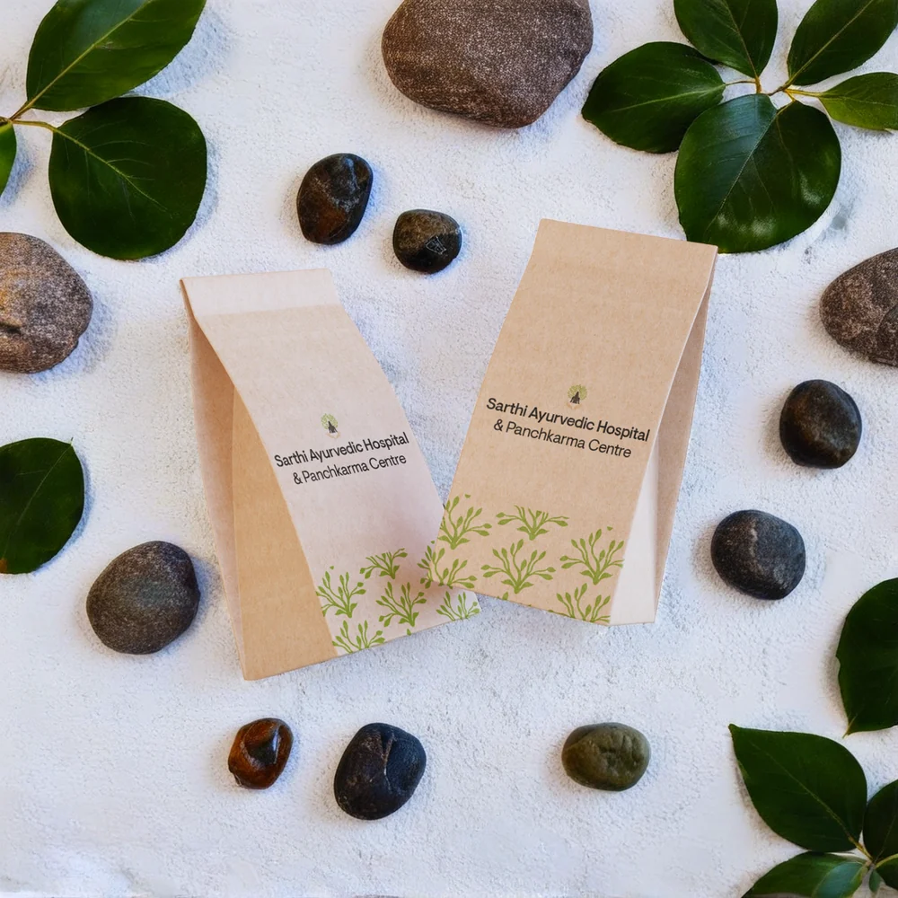
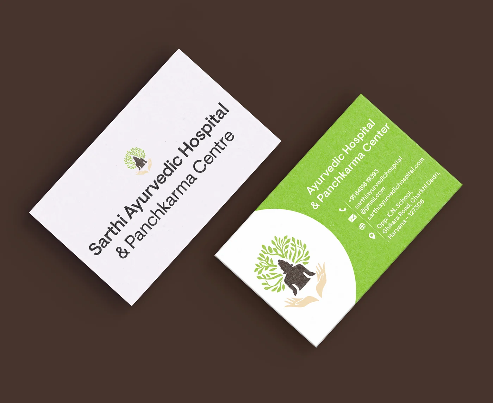

Brand Identity 2025
Sarthi Ayurvedic Hospital
A modern identity for an Ayurvedic Hospital rooted in traditional healing.
- Role
- Brand Identity, Web Design
- Tools
- Figma, Illustrator, Framer.
- Timeline
- 4 Week

The context
An outdated identity, with a timeless mission.
Sarthi Ayurvedic Hospital is a real healthcare institution that has been serving patients with Ayurvedic treatments for years. Their existing logo felt outdated and wasn't working well across modern touchpoints. I redesigned the identity to make it more contemporary, versatile and effective for both digital and physical use.
Research
Studied Sarthi's existing identity and how it could work across healthcare, digital and everyday brand touchpoints.
- Existing identity audit
- Ayurvedic visual references
- Audience & accessibility
- Digital use cases
Direction
Explored a visual direction that could feel modern and trustworthy without losing Sarthi's connection to Ayurveda.
- Nature & healing
- Care & compassion
- Tradition & modernity
- Logo concepts
System
Built the identity around a simple visual idea: natural healing, human care and balance working as one.
- Logo construction
- Logo variants
- Typography
- Colour system
Application
Tested the identity across real-world and digital touchpoints to make sure it stayed clear, consistent and usable.
- Brand applications
- Social media
- Website design
- Responsive digital use
The Mark
Grown on a grid, not by chance
The mark reads as a tree of healing from a distance and a seated figure in meditation up close, so it holds up equally as a favicon and as a two-metre entrance sign at the clinic.
- Grid
- Built on a radial guide, anchored to the seated figure's centreline and mirrored across it
- Weight
- Silhouette density matches the wordmark's cap height, so mark and type sit at equal visual weight
- Minimum size
- 24px, tested legible at favicon scale before the leaf detail simplifies away
Color Palette
A calm, clear and Approachable system
Type
Visuelt Pro, from Thin to Black
Rooted in tradition, built for healing.
The Complete Visual Identity


Identity in action






